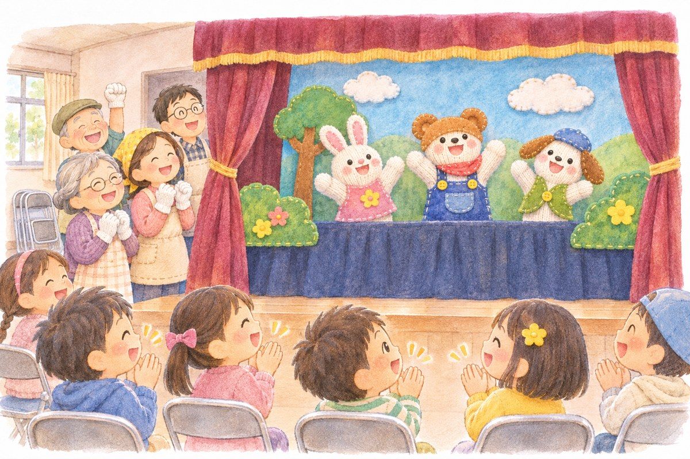

まずは一体、
軍手から
人形劇を始めるのに、大きな準備はいりません。観に行く、手伝ってみる、一体作ってみる。小さな一歩を5つ並べました。続けるための先輩たちの知恵も、あわせて紹介します。


案内役から、ひとこと最初の一体は、うまく作らなくて大丈夫。目を付けた瞬間、その子に名前を付けたくなりますよ。
始め方5ステップ
- 観に行く地元の公民館や図書館、人形劇フェスティバルで、まず市民劇団の公演を観てみましょう。
- 当日スタッフから参加する所沢市のフェスティバルや飯田のサポートスタッフのように、裏方を募集している催しは多くあります。
- 軍手や靴下で一体作る「誰でも」のページの表にある、簡単な人形から始めましょう。
- 公民館で仲間を探す社会教育関係団体の一覧や市報に、人形劇サークルが載っていることがあります。
- 10分の作品を1本仕上げる短い昔話を脚本にして、身近な保育園や児童館で上演してみましょう。
※自治体の登録団体になると、公民館使用料が減免される場合があります（船橋市では5割減額）。条件は自治体ごとに違うので、地元の公民館で確認してください。
続けるために、知っておきたいこと
アマチュア人形劇の大きな課題は、担い手の高齢化と後継者不足です。札幌の人形劇団「ブランコ」は、団員の高齢化を理由に62年の活動に幕を下ろしました。一方、埼玉県三郷市では、35年続いたサークルの活動を新しい劇団が引き継ぎました。引き継ぐ人がいれば、人形や脚本は生き続けます。
長く続けている劇団の5つの工夫
- 演目を人数に合わせるその日に参加できる人数で演目を決める。
- 無理をしない予定を詰めすぎない。一番大事なのは体力。
- 互いの事情を尊重するお金や今後のことは、皆が納得するまで話し合う。
- 知ってもらう周囲への宣伝と口コミで活動を広げ、依頼をいただき続ける。
- 次の世代に触れさせる舞台裏や人形、音響を子どもたちに見せ、触らせる。
（富山県高岡市・魚津市・滑川市の市民劇団の声より）
若い力も育っています。早稲田大学の児童文化研究会は、台本も人形も手作りで、昨年は年20回ほど公演しました。岩手大学や筑波大学にも、児童センターなどで上演するサークルがあります。地域の劇団と大学サークルが組めば、経験と若い力を交換し合う世代間交流にもなります。
人形に命を吹き込み、人をつなぐ
アマチュア人形劇は、誰もが創り手になれる総合芸術です。仲間と創る喜びを分かち合い、観客とともに舞台を作り、地域に感動を届けます。特別な才能のある人だけのものではなく、ふつうの人が個性や経験を持ち寄って作る文化です。
もちろん、参加すれば必ず悩みが消えるわけではありません。それでも、親子の会話、世代間交流、近所づきあい、共同作業。足りなくなりがちなものが、自然に手に入ります。
人形に命を吹き込む楽しみは、
人と人とのつながりを育てる楽しみでもある。
さあ、軍手を一組、手にとってみませんか。
最初のページに戻って、ほかの魅力ものぞいてみましょう。
トップに戻る →